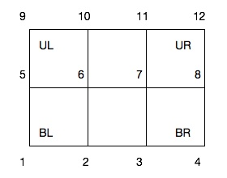
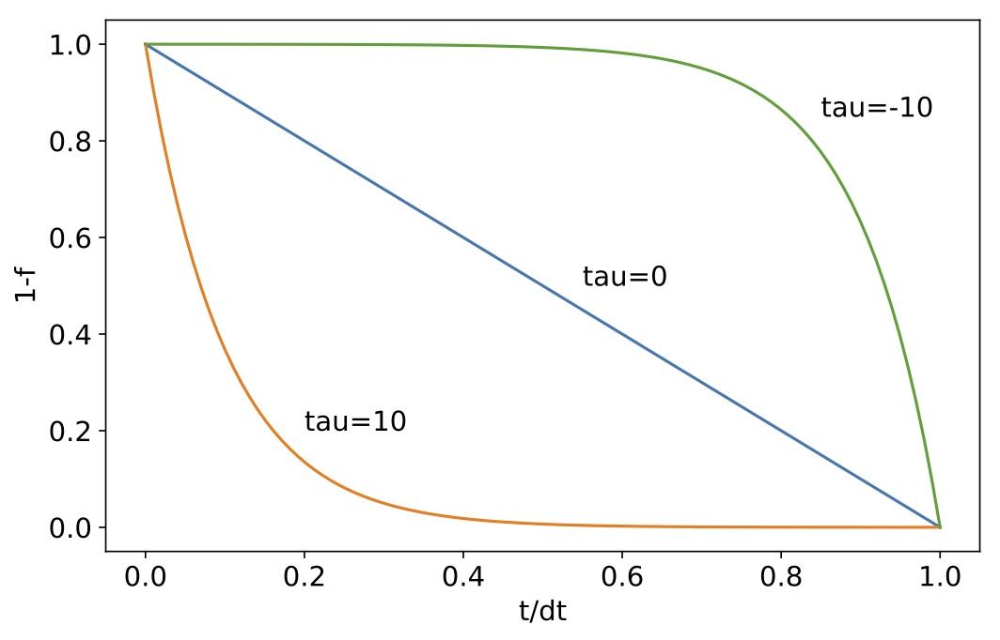
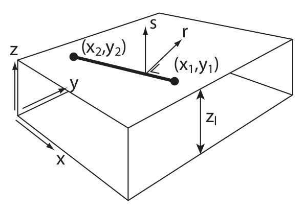
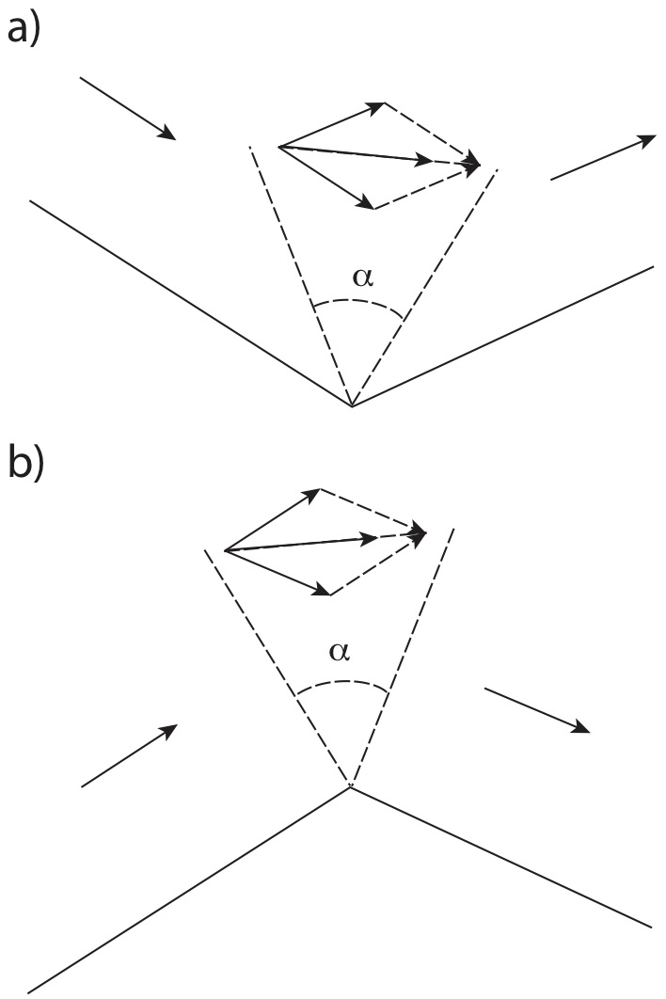
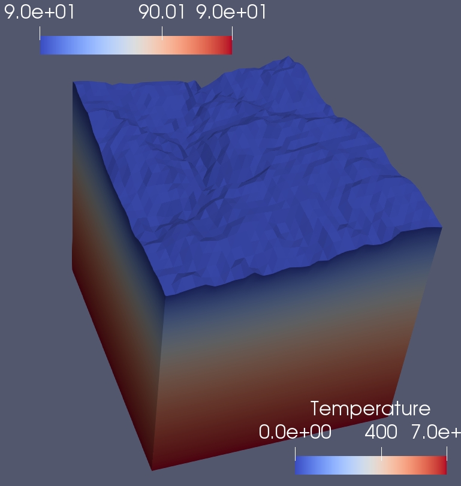
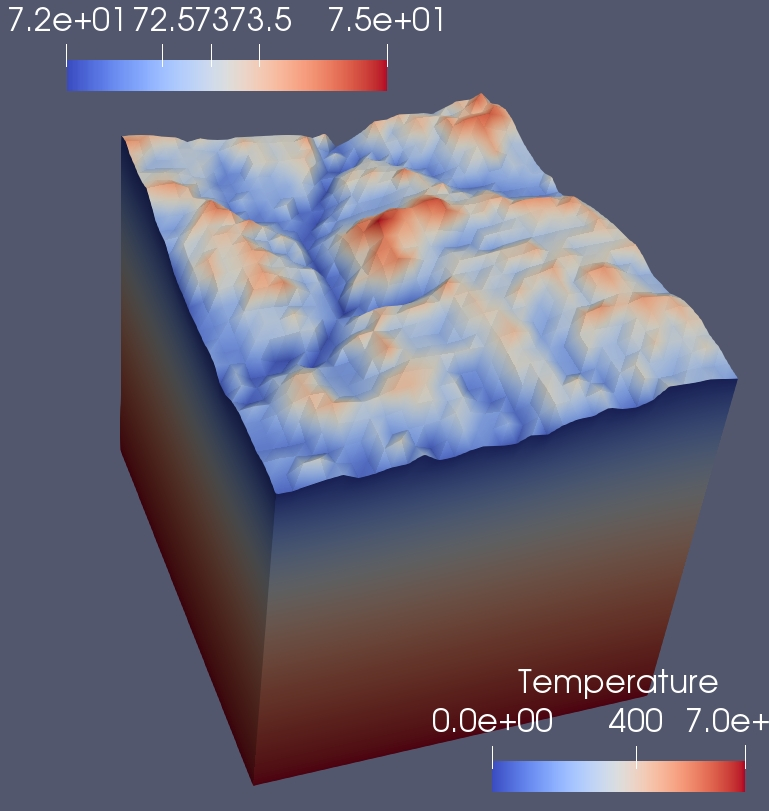
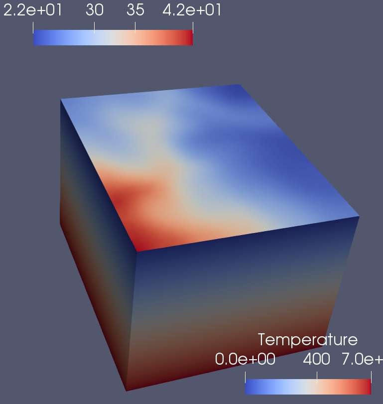
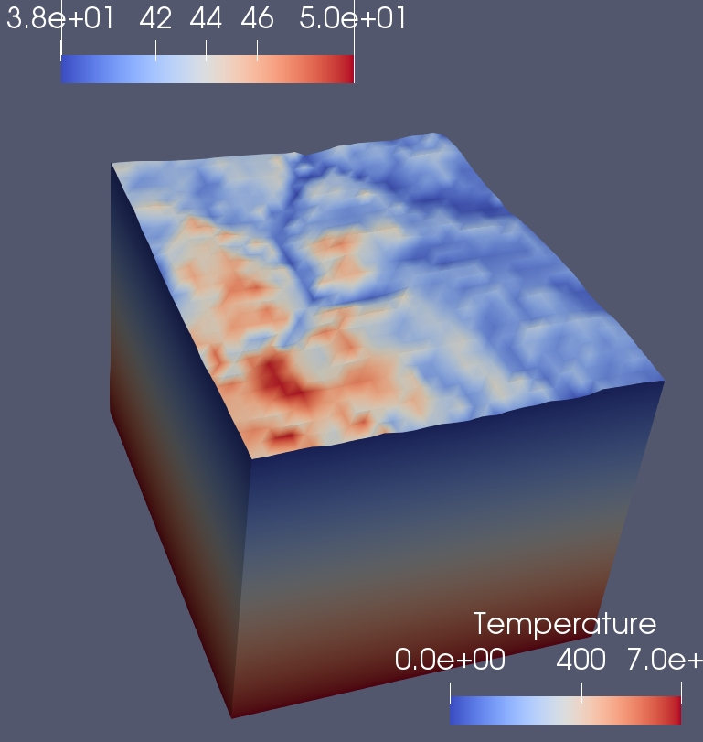

Pecube is a software designed to interpret thermochronological data by solving the heat equation in 3D in the crust.
Pecube is often referred to as a `thermo-kinematic' model because the velocity field used in the advection term of the heat equation is specified by the user, not derived from a dynamical model. However, Pecube is more than a simple thermo-kinematic model because it allows for a finite amplitude, time varying surface topography. Temperature histories are computed for rock particles that will end up at the surface of the model. Rock paths are computed assuming a simple block uplift or motion along faults. From the temperature histories, Pecube compute ages for a variety of thermochronological systems that are compared to observed ages and/or displayed. Pecube can also be run in Inversion mode by finding the optimum values of given model parameters within a specified range that minimize a misfit function. The misfit function is the norm of the difference between observations and predictions. The optimization is performed using the Neighbourhood Algorithm.
Pecube is intended to help thermochronologists in interpreting their data. It transforms tectonic and geomorphic scenarios into thermal histories that are computed to produce synthetic ages. In this latest version of Pecube, thermal histories extracted from the data using other pieces of software (such as QTQT or HEFTY) can be used as constraints rather than the ages themselves. This is a simple way to combine the strength of other pieces of software, which focus on predicting probable thermal histories to the strength of Pecube, which focus on predicting probable tectono-geomorphic scenarios.
Getting started
To run Pecube, you must use line-commands inside a shell or terminal window. Pecube does not have a fancy User Interface. To unlock all functionalities inside Pecube, you must also have installed Paraview, R, gfortran, gcc and mpi (in order of importance) on your computer. These are compilers and interpreters that are needed to transform the code and script files that are provided to you in the distribution file into executalbes. Executables have been created and included in the distribution that should allow you to run Pecube on a MacIntosch computer or a PC.
To run Pecube on a Mac, simply go to the main Pecube folder and issue the following command:
bin/run.sh EXMP1
This will execute a script that will perform a series of operations, including running Pecube from a default (or example) input file: EXMP1/input/Pecube.in. Once this operation is performed (it should take a few minutes on a reasonably fast computer), you can look at the output generated by Pecube in the EXMP1/output folder. You can open any of the .vtk files using Paraview. You can also open any of the .csv files in Excel or Number. They contain summary information of the Pecube run output you just performed.
On a PC, you should execute the following comand:
bin\run.bat EXMP1
or, after making sure that the Pecube/bin directory is included in your PATH:
run.bat EXMP1
Installation
|
If you can read this User Guide, it means that you have already managed to perform at least one of the important steps in installing Pecube: opening the tarball `Pecube_v4.0.tar.gz. |
For a basic installation of Pecube, you only need a computer running MacOSX, Linux or Windows. The Pecube tarball includes executables for MacOSX and Windows. If you have installed gfortran and gcc compilers, you will be able to create the required executables for your system by compiling Pecube. On a Windows machine you will also need a make facility such as mingw32-make. For a complete installation of Pecube, you will need gfortran and gcc compilers, an MPI installation and two other pieces of (free) software: Paraview, the kitware VTK viewer, and R, the statistical package.
Installation procedure for a basic installation:
-
untar the tarball:
tar -xzvf Pecube_v4.0.tar.gz
-
go to the main Pecube directory:
cd Pecube
-
run Pecube:
bin/run.sh EXMP1
Installation procedure for a complete installation:
-
after obtaining a basic installation, modify a piece of code:
touch src/Pecube.f90
and compile the code:
bin/compile.sh
-
and check that the new version runs properly:
bin/run.sh EXMP1
Running Pecube
PECUBE
bin/run.sh $NAME
where $NAME is the name of a project, i.e., a folder the user has created that contains at minima an input directory in which the main Pecube input file Pecube.in is stored. This will run the input file tester bin/Test, Pecube itself bin/Pecube, and the VTK post-processor bin/Vtk.
|
In the previous version of Pecube (version 3), the name of the project was contained in the topographic input file. In Pecube version 4 (2018) the user needs to specify the name of the project folder in the command line that starts Pecube. This is a major difference between this new version 4 (2018) and the previous version 3. |
|
|
Pecube will echo the content of the input file (if the echo_input_file flag has been set) to the default output (screen/terminal) and provide information about the progress of the run as it progresses.
In Inversion mode, the output is limited to one line per run.
MPI version
mpiexec -np $n bin/PecubeMPI.sh $NAME
where $n is the number of processors/cores/threads to be used by Pecube. This will run $n instances of Pecube simultaneously on the $n processors.
|
The MPI version should only be use din Inversion mode as Pecube cannot take advantage of multi-processor architecture for a single run. |
VTK Postprocessor
The user may select to run the VTK post-processor only by issuing the command:
bin/Vtk $NAME
Input file tester
The user may select to run the input file tester only by issuing the command:
bin/Test $NAME
Using old input files
To allow easy migration to the Pecube version 4 (2018), a utility called Pecube324 is provided that transform the two input files topo_parameters.txt and fault_parameters.txt needed in the version 2 of Pecube into a single input file Pecube.in for Pecube version 3. To run the procedure, first copy the two version 2 input files in the folder old_input and run the bin/Pecube324 utility:
bin/Pecube324
File structure
Pecube exists inside of a strict file structure that is designed to help you organize your Pecube projects. It is summarized in the following diagram.
The bin folder contains the executables produced at compilation and that need to be used to run Pecube. The src folder contains the FOrtran (and C) code. The tools folder contains a few tools such as NA.R the R-script used for displaying the results of inversions or GenerateTimes.fio, a Fortran code to generate file names in a sequence. The docs folder contains the documentation as well as all the elements needed to update it (figures and the Pecube.adoc file). The tmp folder contains intermediary files created during a Pecube run. It should not be changed/eroased. The old_input is used to translate old Pecube input files (form V2) into a new input file (V3). The topo folder shold contain the Topo30 file that contains the global world topography (see section Topography parameters) for details. The other folders correspond to distinct Pecube projects. You should create one folder per idea/dataset/location/etc.
bin
This folder contains several shell scripts:
-
run.sh: used to run Pecube
-
crun.sh: used to compile Pecube and all its components AND run Peccube
-
compile.sh: used to compile Pecube and all its components
-
tarngo.sh: shell script to create a new Pecube tarball; to use it, one must be in the main Pecube folder and issue the commandtools/tarngo.sh VERSIONwhereVERSIONis a version number or tag that will be added to the name of the tarball:Pecube_VERSION.tar.gz.
|
crun.sh and compile.sh will work ONLY if you have |
as well as some executables:
-
Pecube: Pecube executable
-
Vtk: executable to produce VTK output files after a Pecube run
-
Test: executable to produce VTK geometry files (such as topography, fault geometry, and velocity) before a Pecube run to check the validity of an input file
-
PecubeMPI: Pecube executable for multi-processor machines
-
Pecube324: Executable to transform “old format” Pecube input files to the “new format” input file
|
Don’t forget that to run Pecube or to perform any operation, the corresponding command muyst be issued form the main Pecube folder |
src
This folder contains the complete set of ForTran and C subroutines that make up Pecube. They are all necessary for the user to compile Pecube.
|
The content of the |
tools
This folder contains:
-
NA.R: R-script used for displaying the results of inversions
docs
This folder contains the documentation. It includes:
-
Pecube.adoc: the User Guide in.adocformat that is used to generate the.htmlversion using asciidoc -
Pecube.html: the User guide for display on a web browser -
Pecube.pdf: the User guide in pdf format -
asciidoc.conf: configuration file for asciidoc -
images: a folder containing a few images/figures used in the User Guide
tmp
This folder contains intermediary files that are created when Pecube is executed.
|
If this folder becomes too voluminous, the user may erase its content. But the folder itself must exist for Pecube to run. |
old_input
This is where the user should put the “old format” Pecube input files, namely topo_parameters.txt and fault_parameters.txt to be transformed/translated to the new format. To perform this translation, the user should then run the Pecube324 executable. Pecube324 will read the name of the run in topo_parameters.txt and will create a folder of the same name where the new input file Pecube.in will be stored (in the data folder)
|
You must be in the main Pecube folder to perform this operation and issue the command |
project folders
For each project, the user should create a project folder. For backward compatibility, the name of the folder corresponding to any given project must be composed of 5 characters, such as RUN01 or KINGC or 00027. Each project folder should contain, at minima, an other directory called input. In this directory should be a file named Pecube.in. This is the main (and only) input file containing the value of all Pecube model parameters.
|
The user should not use space (blank characters) for the project folder names… |
The project folders may also contain a data folder that contains the data collected by the user and used to constrain a Pecube run. The data folder itself is made of subfolders of arbitrary name (not limited to 5 characters) that contains a series of data files. Only one of these sub-directories can be accessed/read in any given Pecube run/inversion and is specified by the data_folder parameter in the input file Pecube.in. The reason for creating this layer of subfolders is to allow the user to use different datasets or different combinaisons of datasets to perform different inversions using Pecube.
For example, the user has performed an inversion using all the data from a series of files stored in the data/dataset1 sub-folder. The user may wish to see how important a set Apatite Helium ages is in constraining the result of an inversion. For this the user creates a new subdirectory called data/dataset2 in which all files from the data/dataset1 sub-directory have been copied, EXCEPT for the file(s) containing the Apatite Helium ages. The user can then perform a new Pecube run or inversion by specifying data_folder = dataset2 in the Pecube.in input file.
After Pecube is run, the project folder will contain an output folder in which the Pecube outputs are stored as .csv files and .out or binary files. The .csv files can be opened in Excel or Numbers or any other data analysis software for processing. They include: the ages at all points of the topographic grid for each of the thermochronological systems (or as requested), the comparison between the data/observations and the Pecube predictions (if data has been provided to Pecube), time-temperature paths (if requested) and volume eroded (if requested). The .out files are binary files that are used to produce the VTK files stored in the VTK folder (see below). The content of all output files is described in the section [Output]
Other folders created at Pecube run time include:
-
a
VTKfolder that contains the.vtkfiles created by Pecube -
a
NAfolder that contains the results of any Pecube inversion as.csvand.nadfiles -
a
LOGfolder that contains a log file in case the user has turned on thedebugoption in thePecube.ininput file
|
At run time, Pecube will create all the folders (if they do not exist yet) inside the |
topo
The topo folder contains a single file called Topo30 that contains a 30 sec resolution DEM of the world. See section [topo_file_name] for further details on its content and its use/purpose.
Main input file
Pecube input file Pecube.in contains all the directives and model parameter values needed for Pecube to perform a run, including the name of the topographic file (or DEM) and the name of the data folder where the data/observations to model are stored. it is stored in the $RUN/input directory/folder.
Topography parameters
topo_file_name(default =Nil)-
Name of the file containing the topography as a grid of elevation points. The file should be in the
$RUN/datadirectory and contain a single column of real numbers giving the elevation of the topography in meters, starting from the bottom left corner, ending at the top right corner, and spanning the area of interest (defined bylat0, lon0, nx, ny, dlon, dlat) in row-major order. 
|
nx(default =31)-
Number of points describing the topography in the x-(or longitude-)direction
|
|
ny(default =31)-
Number of points describing the topography in the y-(or latitude-)direction
lon0(default =0)-
Longitude of the bottom left corner of the topographic data/file/grid(s)
|
Longitudes are expressed in decimal degree; longitudes East of Greenwich meridian are positive; longitudes West of Greenwich are negative meridian |
lat0(default =0)-
Latitude of the bottom left corner of the topographic data/file/grid(s)
|
Latitudes are expressed in decimal degree; longitudes North of Equator are positive; longitudes South of Equator are negative |
dlon(default =0.0083333)-
Distance in decimal degrees between two points on the topographic grid in the longitude direction
|
|
dlat(default =0.0083333)-
Distance in decimal degrees between two points on the topographic grid in the latitude direction
nskip(default =1)-
Stride used to read the topo_input_file. When
nskip=1, all points of thetopo_input_fileare used, otherwise everynskippoint only is used, in both the x- and y-directions
Time evolution parameters
ntime(default =1)-
Number of time steps needed to describe the scenario for the evolution of the topography. For each time step, you will need to provide an amplification factor,
amplificationi, an offset factor,offseti, as well as an output flag value,outputi. At stepi, the topography used in Pecube,hi, is obtained by the following scaling of the topography,h0, in the input file:hi = offseti + amplificationi x h0
|
There is an implied time step corresponding to present-day, for which the amplification factor |
time_topoi(no default values)-
Time expressed in million years in the past at which topography is set to
hi = offseti + amplificationi x h0.
|
Because Pecube uses geological time, the various |
amplificationi(default =1)-
Topographic amplification factor used at time
i offseti(default =0)-
Topographic offset factor used at time
i outputi(default =1)-
Output flag used at time
i. Ifoutputi = 1, Pecube will compute and output thermochronological ages at timei. Ifoutputi = 0, Pecube will not compute nor will it output ages at timei
|
Setting the output flag |
erosional_time_scale(default =0)-
Time scale (in Myr) that determines how the topography is interpolated between two time steps, i.e. during a given time interval. If the time scale is nil, the interpolation is linear; if the time scale is large and positive, the interpolation corresponds to a decelerating change throughout the time interval (the most likely “geomorphic” scenario for an eroding topography); if the time scale is large and negative, the interpolation corresponds to an accelerating change throughout the time interval. 
|
The formula used in Pecube to interpolate topography during a time step is: |
Thermal parameters
thickness(default =35)-
Assumed crustal thickness (in km). This is the depth of the bottom of the crustal layer being modeled. The temperature at the base of the model (depth =
thickness) is assumed to be fixed at a value set bybasal_temperature basal_temperature(default =700)-
Temperature (in °C) imposed at the base of the model, i.e. at a depth specified by
thickness. nz(default =21)-
Number of points used to discretize the crust in the z-direction
sea_level_temperature(default =0)-
Temperature (in °C) at sea level (zero topography).
|
The surface boundary condition in Pecube assumes that the temperature can vary as a function of elevation. The formula for |
lapse_rate(default =0)-
Rate of change of temperature with elevation in the atmosphere (in °C/km).
thermal_diffusivity(default =25)-
Thermal diffusivity,
kappa, used in Pecube to solve the heat transport equation in 3D:
Tt + vx Tx + vy Ty + vz z = kappa (Txx + Tyy + Tzz) + H
The thermal diffusivity is in km2/Myr. If it is given as a negative number, a subroutine calledthermal_diffusivitymust be supplied by the user to describe the spatial variation of the diffusivity at the onset of calculations, and its potential variation with time and temperature. The following “empty” subroutine is provided with the Pecube distribution.
double precision thermal_diffusivity (x0,y0,z0,temp,time)
implicit none
double precision x0,y0,z0,temp,time
thermal_diffusivity=25.d0
return
endheat_production(default =0)-
Heat production used to solve the heat transport equation (in °C/Myr). If it is given as a negative number, a subroutine called
heat_productionmust be supplied by the user to describe the spatial variation of the heat production at the onset of calculations, and its potential variation with time and temperature. The following “empty” subroutine is provided with the Pecube distribution.
double precision function heat_production (x0,y0,z0,temp,time)
implicit none
double precision x0,y0,z0,temp,time
heat_production=3.d0
return
endData parameters
data_folder(default =Nil)-
Name of a folder stored in the
data/directory that contains all the data/observations that the use wishes to pass to Pecube, either for comparison with Pecube's predictions or for inversion purposes. The content of the.csvfiles contained in thedata_folderis described in the section Feeding data to Pecube. default_age(default =time_topo1)-
Default age (in Myr) given to rock particles that have not been reset, i.e. that have not reached the “closure temperature” for the system considered.
FT_code_flag(default =0)-
Flag used to define which of the two fission track annealing routine to use to predict fission track ages and fission track length distributions. If
FT_code_flag = 0Peter van der Beek’s routine is used; ifFT_code_flag = 1Richard Ketcham’s routine is used.
Tectonic parameters
Tectonic forcing is introduced in Pecube by setting a velocity field (relative to the base of the model that is assumed to remain fixed) or rock uplift/transport velocity that is then used in the heat transport equation. Pecube allows for two type of tectonic forcings: a “uniform” uplift, i.e. that can only vary as a bi-linear function of horizontal coordinates, and a velocity field corresponding to faults of a given geometry. The faults are planar and tri-dimensional but must all have the same strike (i.e. orientation of their ssurface expression). To define a fault, the use must specify the direction of that strike, as well as the width of the faults, by giving the lat-lon coordinates of two points, X1 and X2. The geometry of these two points is shown in the following figure. 
The vertical geometry of the faults is then specified by a number of (r,s) points that define segments of the faults. r is the horizontal coordinate perpendicular to the line defined by the two points X1 and X2. s is the vertical coordinate (positive above the top surface, z = 0). Note that the direction of r is to the right of the line defined by going from X1 to X2.
Velocities are then calculated by assuming that the velocity vector parallel to each of the successive fault segments. In regions where two segments of the fault can be used to define the velocity, the average is used. This ensures mass conservation across fault segments. 
The amplitude of the velocity can change through time for each fault. It is specified through a termporal history made of time intervls and velocity magnitude. The velocity amplitude provided by the user is the horizontal convergence velocity (or divergence velocity). If the velocity is positive, the fault is asumed to be normal; if the velocity is negative the fault is assumed to be a thrust.
Note that the order in which the (r,s) points are given is important: it determines on which side of the fault the velocity is calculated/applied. The rule is that the velocity is applied on the right-hand side of the fault (going from the first to the last point defining the segments of the fault). The two options are illustrated in the following figure for a thrust fault (negative velocity amplitude).
nfault(default =0)-
Number of faults used to describe the velocity field.
|
If the user wishes to specify a uniform uplift and no fault, |
lon1(default =0)-
Longitude (in decimal degrees) of
X1, the first of two points used to define the faults strike and width. lat1(default =0)-
Latitude (in decimal degrees) of
X1, the first of two points used to define the faults strike and width. lon2(default =0)-
Longitude (in decimal degrees) of
X2, the second of two points used to define the faults strike and width. lat2(default =0)-
Latitude (in decimal degrees) of
X2, the second of two points used to define the faults strike and width. npointi(no default value)-
Number of points used to define the fault segments in the vertical direction for fault
i.
|
Note that if the user wishes to use a uniform uplift function, it must specify a single fault ( |
|
The fault segment geometry (the |
ri_j(no default value)-
Horizontal coordinate of point j of fault i (in km) used to define the fault i geometry.
|
si_j(no default value)-
Vertical coordinate of point j of fault i (in km) used to define the fault i geometry. Positive values correspond to positive elevation, negative values correspond to depth.
|
Setting an |
bottom_left(default =1)-
Uplift velocity (in km/Myr) imposed across the entire depth range at the bottom left corner of the Pecube domain (minimum longitude and minimum latitude). This parameter as well as
bottom_right,upper_rightandupper_left, are needed when defining a uniform uplift velocity (nfault = 1andnpoints1 = -1). These four values are then used to compute a velocity field by bi-linear interpolation. bottom_right(default =1)-
Uplift velocity (in km/Myr) imposed across the entire depth range at the bottom right corner of the Pecube domain (maximum longitude and minimum latitude).
top_right(default =1)-
Uplift velocity (in km/Myr) imposed across the entire depth range at the upper right corner of the Pecube domain (maximum longitude and maximum latitude).
top_left(default =1)-
Uplift velocity (in km/Myr) imposed across the entire depth range at the upper left corner of the Pecube domain (minimum longitude and maximum latitude).
nstepi(no default value)-
Number of time intervals needed to define the velocity history for fault i.
time_starti_j(no default value)-
Begining of time interval j (in Myr and geological time) for fault i.
|
Because Pecube use geological time, the start time must be greater than the end time. |
time_endi_j(no default value)-
End of time interval j (in Myr and geological time) for fault i.
|
Setting a |
|
One can also force a time value (either |
veloi_j(no default value)-
Velocity amplitude (in km/Myr) for time interval j for fault i.
statici(default =0)-
Flag used to inhibit the contribution from fault i to the computed velocity field; when this flag is set to 1 the fault is only used to advect the other faults, it does not contribute to the velocity field used to compute the advection term in Pecube.
logarithmic_velocity(default =0)-
Flag used to specify whether velocities are given as logarithmic values (if set to 1) (this is potentially useful for inversion purposes). See section [Inversion] for more details about Pecube inversion mode.
Output parameters
Pecube outputs the results of the computations in a variety of formats and files. A full descrition of the output from Pecube is given in section [Output]. One of these outputs is the computed ages at all points of the surface/topographic grid. The number of these points can be quite large (10,0000 or more) and computation of all ages (i.e. for all thermochronometric systems) will take some time. The user might not be interested in all different types of ages; therefore options exists to restrict the number of thermochronologis systems being computed by Pecube.
age_TL_flag(default =0)-
Flag to impose the computation of Thermoluminescence ages (=1) at all points of the surface/topographic grid or to prevent it (1).
age_OSL_flag(default =0)-
Flag to impose the computation of Optical Luminescence ages (=1) at all points of the surface/topographic grid or to prevent it (1).
TL_doser(default =5)-
Dose rate used for TL/OSL data computation (in Gy/s/ka)
TL_D0(default =800)-
Onset of dose saturation for TL/OSL data computation (in Gy)
TL_a(default =1.8)-
Kinetic orders of trapping for TL/OSL data computation
TL_b(default =1.8)-
Kinetic orders of detrapping for TL/OSL data computation
TL_Et(default = 1.4)-
Activation energy for TL/OSL data computation (in eV)
TL_logs(default = 12)-
Logarithm of thermal frequency factor for TL/OSL data computation (in 1/s)
TL_logrho(default = -5.5)-
Logarithm of dimensionless recombination center density for TL/OSL data computation
age_AHe_flag(default =0)-
Flag to impose the computation of Helium ages in Apatite (=1) at all points of the surface/topographic grid or to prevent it (1).
age_ZHe_flag(default =0)-
Flag to impose the computation of Helium ages in Zircon (=1) at all points of the surface/topographic grid or to prevent it (1).
age_AFT_flag(default =0)-
Flag to impose the computation of fission track ages in Apatite (=1) at all points of the surface/topographic grid or to prevent it (1).
age_ZFT_flag(default =0)-
Flag to impose the computation of fission track ages in Zircon (=1) at all points of the surface/topographic grid or to prevent it (1).
age_FTL_flag(default =0)-
Flag to impose the computation of mean fission track length in Apatite (=1) at all points of the surface/topographic grid or to prevent it (1).
age_KAr_flag(default =0)-
Flag to impose the computation of Argon ages in K-Feldspar (=1) at all points of the surface/topographic grid or to prevent it (1).
age_BAr_flag(default =0)-
Flag to impose the computation of Argon ages in Biotite (=1) at all points of the surface/topographic grid or to prevent it (1).
age_MAr_flag(default =0)-
Flag to impose the computation of Argon ages in Muscovite (=1) at all points of the surface/topographic grid or to prevent it (1).
age_HAr_flag(default =0)-
Flag to impose the computation of Argon ages in Hornblende (=1) at all points of the surface/topographic grid or to prevent it (1).
debug(default =0)-
Flag to impose debuging information to be sent to a log file (if set to 1)
|
This option for advanced users or developers only. |
save_PTT_paths(default =0)-
Flag to force the saving to
.csvfiles of the thermal histories of points where observations have been provided (if set to 1). save_eroded_volume(default =0)-
Flag to force the saving to a
.csvfile of the eroded volume through time (if set to 1) echo_input_file(default =0)-
Flag to echo the content of the
Pecube.infile. Four values are accepted:-
0: no echo
-
1: echo the name of the parameter and its value read in the input file
-
2: echo the name of the parameter and both its value read in the input file and its default value
-
3: echo the name of the parameter, its value read in the input file and its default value, and a short description
-
4: echo a short description of all parameters that can be specified in the input file (this option interrupts the execution of Pecube)
-
Isostasy parameters
isostasy(default =0)-
Flag used to trigger flexural isostatic adjustment to Pecube. If
isostasy = 0, no isostatic calculations are done; ifisostasy = 1isostatic calculations are performed at every time step.
|
Pecube solves the equation governing the deflection of a 2D thin elastic plate floating on an inviscid asthenosphere: |
|
The load |
EET(default =20)-
Effective Elastic Thickness (in km) used to compute the isostatic deflection.
rho_crust(default =2400)-
Crustal density (in kg/m3) used to compute the isostatic deflection.
rho_asthenosphere(default =3150)-
Asthenospheric density (in kg/m3) used to compute the isostatic deflection.
young_modulus(default =1e11)-
Young Modulus (in Pa) used to compute the isostatic deflection.
poisson_ratio(default =0.25)-
Poisson’s ratio (unitless) used to compute the isostatic deflection.
nx_isostasy(default =1024)-
resolution of the FFT grid (in the x-direction) used to solve the flexure equation. It must be a power of 2.
|
Pecube first interpolates the load (derived from the increment in topography over the time step) onto a regular mesh of resolution |
ny_isostasy(default =1024)-
resolution of the FFT grid (in the x-direction) used to solve the flexure equation. It must be a power of 2.
Inversion parameters
Pecube can be used in Inversion mode to explore/find the value of seleceted parameters that produce ages that best fit observations/data provided by the user. The Inversion mode is explained in section [Inversion] and makes use of the Neighbourhood Algorithm (NA). A few flags can be set to control/alter the behaviour of the Neighbourhood algorithm.
maximum_number_of_iterations(default =4)-
Total number of NA iterations to be performed (not including the first one).
|
NA explores the parameter space by randomly generating sets of model parameters (one set per forward model run of Pecube). It performs this task a set number of times (or iterations) given by the parameter |
sample_size_for_first_iteration(default =8)-
Number of model runs (and model parameter sets) performed during the first, initial iteration.
sample_size_for_all_other_iterations(default =8)-
Number of model runs (and model parameter sets) performed during every subsequent iteration.
number_of_cells_to_resample(default =4)-
Number of Voronoi cells that will be resampled uniformly during any given iteration (except the first one). Those Voronoi cells are selected to be those that are charcaterized by the smallest misfit values..
misfit_weight_AGE(default =1)-
Factor or weight (dimensionless) multiplying the part of the misfit function that measures the difference between observed and predicted ages.
|
The Neighbourhood Algorithm explores parameter space to minimize a misfit function that measures the difference between observations and predictions. This function is made up of various components that are added to each other and correspond to different types of data/observations. The user can alter how these different types of data are combined by specifying weights or factors. These are |
misfit_weight_FTLD(default =1)-
Factor or weight (dimensionless) multiplying the part of the misfit function that measures the difference between observed and predicted fission track length distributions.
misfit_weight_TH(default =1)-
Factor or weight (dimensionless) multiplying the part of the misfit function that measures the difference between observed and predicted thermal histories.
misfit_weight_43He(default =1)-
Factor or weight (dimensionless) multiplying the part of the misfit function that measures the difference between observed and predicted 43Helium ages.
misfit_weight_TL(default =1)-
Factor or weight (dimensionless) multiplying the part of the misfit function that measures the difference between observed and predicted Thermoluminescence data.
misfit_slope(default =0)-
Flag to set whether the ages themselves are to be used to define the age part of the misfit function (
misfit_slope=0) or if the slope and intercept of the age-elevation relationship derived form the predictions and observations are to be used (misfit_slope=1).
|
Note that the age elevation relationship used for the misfit function is computed for all the points for which an age is provided. |
misfit_corrected(default =0)-
Flag to correct the misfit function by the number of observations minus the number of parameters + 1 (if
misfit_corrected=1)
Miscellaneous flags
fault_advect_flag(default =0)-
Flag to set whether the motion on any given fault can affect the geometry/position of the other faults (
fault_advect_flag = 1) or not (fault_advect_flag = 0).
|
In theory, this flag should be set to 1. However, in practice, this requires that the faults be each defined by a large number of segments/points as the fault geometry is updated by updating the position of the points defining the segments. If a fault is defined by only a few points, once these points are advected the fault geometry resulting from connecting these points by line segments can be very “strange”. In general, we do not recommend that the user sets this flag to 1. |
shear_heating(default =0)-
Friction coefficient used to multiply an arbitrary stress value of 100 Mpa to compute the heat produced by friction; the heat is calculated as the product of strain rate, stress, and the friction coefficient, divided by the specific heat capacity (taken here to be 800 J/°C/kg). The strain rate is directly computed from the velocity field.
|
To change the value of the assumed stress and/or heat capacity, the user should simply modify the value of the friction coefficient accordingly, as all factors are multiplied. |
Output
Types and formats
Pecube produces several types of output. They include:
-
ages computed at the nodes of the topographic grid
-
ages and T-t paths computed at the observation points (i.e. where data was provided)
-
The temperature field inside the crust
-
echoes of the model setup, such as the topography through time, the geometry of the faults and the exhumation velocity field
These outputs are stored under verious formats:
-
as
.csvor comma-separated-values files stored in theoutputfolder of the current $RUN -
as
.vtkor virtual tool kit files stored in theVTKfolder of the current $RUN -
as
.outor binary files stored in theoutputfolder of the current $RUN
CSV files
Ages files
The main purpose of Pecube is to compute ages from a given tectonomorphic scenario. Pecube therefore computes the ages for a variety of system for all the points (or rock particles) that end up at the nodes of the topographic file at the end of the run. It also computes these ages at intermediary times as specified in the Pecube.in file by the outputi flag. If this flag is set to 1 for n steps (including the last step corresponding to present-day), Pecube will generates n ages files named Ages001.csv to Ages00n.csv, starting from the oldest to the youngest age.
Each file contains a table that include, as columns:
-
Longitude
-
Latitude
-
Height
-
Apatite Helium age
-
Zircon Helium age
-
Apatite Fission track age
-
Zircon aFission track ge
-
K-Feldspar K-Argon age
-
Biotite K-Argon age
-
Muscovite K-Argon age
-
Hornblend K-Argon age
-
Apatite Fission track mean track length
Longitudes and latitudes are in decimal degrees, height is in meters, Ages are in Myr and length in microns Each row corresponds to a point on the topographic mesh. Note that only selected ages are computed, as instructed by the user in the Pecube.in file through the various age_xxx_flags. See section Output parameters for details.
|
French users are warned that Pecube uses English/US convention for sed sed 's/,/;/g' English.csv | sed 's/./,/g' > French.csv |
Comparisons with data
Pecube other main purpose is to compare its preditions to data. If the user provides data, Pecube will automatically predict this data. It will also generate several output files that compare predicted to observed ages, thermal histories, 43He or TL data. These are called:
-
CompareAGE.csv, for the ages -
CompareTT.csv, for the thermal histories -
Compare43HE.csv, for the 43He data -
CompareTL.csv, for the TL data
These files have a simple structure made of columns that, in addition to latitude and longitude, give the observed (OBS) and predicted (PRED) quantities. Each row corresponds to an observation/sample.
|
To extract from Pecube synthetic ages at specific points (i.e. that are not nodes of the topographic grid), the user should include a |
Time temperature paths
Pecube will also exports computed time-temperature paths at the observation points (i.e. where data has been provided by the user) if the flag save_PTT_paths has been set to 1 in the Pecube.in input file. This information is stored in the TimeTemperaturePaths.csv file in the output folder.
The format of the TimeTemperaturePaths.csv file is:
-
as many rows as there are times in the thermal history
-
as many columns as there are points to track + 1
-
the first column is the time
-
the other columns are the temperatures of each of the points to track
Eroded volumes
On request, a file containing the evolution through time of eroded volume is produced by Pecube. It is called VolumeEroded.csv and is stored in the output ` folder. To generate the eroded volumes file, the flag ` must be set to 1 in the Pecube.in input file.
The format of the VolumeEroded.csv file is:
-
four columns and as many rows as there are time intervals
-
the first two colums are the start and end of each time interval in Myr
-
the thrid column is the flux or volume per unit time in km3/Myr
-
the fourth column is the cumulative eroded volume in km3
VTK files
Pecube also generates .vtk files that can be used to visualize the results of a model run using the Paraview software.
These include:
-
Ages00i.vtkfiles that contain surface ages computed by Pecube -
Pecube00i.vtkfiles that contain the temperature structure computed by Pecube -
Topo00i.vtkfiles that contain surface topography given to Pecube -
fault00i.vtkfiles that contain fault geometries given to Pecube -
velo00i.vtkfiles that contain velocity fields computed by Pecube
where i is the number of the time step among those that have been saved as indicated in the Pecube.in input file through the output*i flags.
Pecube also generates a file named Data.csv stored in the VTK folder that contains the location of the observations provided to Pecube.
|
The bin/Test $RUN to generate the bin/Vtk $RUN to generate the |
|
Paraview is a very powerful yet free software that is widely used to represent scietific data in 3D. The author strongly recommends to Pecube users to learn the basics of Paraview as well as a=some of its advanced features to analyse Pecube predictions in details. |
BIN files
Everytime Pecube runs it generates two binary output files that are used for post-processing. Note that this does not apply when Pecube is run in Inversion mode. These two files are called Pecube.out and Ages.out and are stored in the output folder. The first one contains the complete temperature history computed by Pecube, as well as the surface geometry and the velocity used to copmute the thermal histories. The second contains the ages as computed by Pecube.
|
The binary files exist mostly for legacy reasons. They should not be used by the user. If a user needs access to the complete temperature structure, for example, the author should be contacted for further information on how to access these binary files. |
Log file
When the debugging mode is activated, Pecube activity is logged in a log file called Pecube.log stored in the LOG folder. The information sent to the log file is for debugging purposes and of little use to the user. To enable debugging mode, the user must set the debug to 1 in the Pecube.in file.
Feeding data to Pecube
Pecube accepts many types of data, mostly ages but not exclusively. Pecube makes use of data in two separate ways: First, Pecube can be used to reproduce observations by computing synthetic values at the same locations, second it can use these synthetic values to compare them to the observations and to direct the search for optimal values of model parameters, when used in its Inversion mode.
All data must be stored in .csv files that contains informative labels to help Pecube access the data. For example a data file that contains Apatite Helium ages and their uncertainty at a set of n locations must contain, at minima five columns: one containing the name of each sample, two containing the latitude and longitude of each sample and two containing the age and its uncertainty. There may be more columns that contain other information useful for Pecube, like Apatite fission track ages, for example, or not, like the age of the geologist who collected the data. That “useless” information is managed by Pecube but not used.
Some data types require a different format. For example raw fission track length measurements that consist in a large collection of number (~100) each corresponding to a discrete track length measurement. This data is stored in a file where columns containing the sample name, its latitude and longitude are necessary but also a column that contain more than one number, i.e. the fission track length measurements.
|
Note that two distinct methods/formats can be used to input a fission track length dataset, the first, as described above, by reading in a long list of track length measurements, the second by reading a fission track length distribution that has already been computed by the user from the raw fission track length dataset. |
All data files must be stored inside one sub-folder in the data folder. The name of the subfolder is passed to Pecube through the Pecube.in input file under the tag/name data_folder. The user can create more than one data subfolder to group the various datafiles in intended combinaisons. There are five different types of data files, age datafiles (A_files), fission track length data files (FTL_files), thermal histories data files (TH_files), 43He datafiles (43_files) and thermoluminescence datafiles (TL_files).
Conventions
All data files must be in .csv format. This means that they can be prepared in your favorite data analysis software (like Excel or Numbers) and exported as .csv.
|
French users are warned that Excel (or Numbers) export data in sed 's/,/./g' French.csv | sed 's/;/,/g' > English.csv |
To recognize data file types and the data inside the files, Pecube does not use data file names, but the tags/labels of the columns inside the files. For example, any data/sample in any file must contain a colum names SAMPLE and two other columns names LON and LAT. Apatite Helium ages are stored in a column named AHE and their uncertainties in DAHE.
The convention is that the capitalization of the tag does not matter, i.e., ahe is equivalent to AHe or to AHE.
The order of the columns (or tags) does not matter. The first column can be the sample name, but it does not have to be.
Some colums can be empty and some lines can be empty.
Some columns may contain data that is not meaningful for Pecube; they will not be read but should not interfere with the meaningful information. Avoid, however, cluttering your .csv data files with useless information that increases the chance that your data be not read appropriately by Peube.
|
Where a data is expected, the user should use numerical values that make sense, such as |
Data types
In the following table, we give the list of tags that are expected (√) or allowed (+) in each of the five different data type files.
[[Data types]]
| Data type | Tag | A_files | FTL_files | TH_files | 43_files | TL_files |
|---|---|---|---|---|---|---|
Sample name |
SAMPLE |
√ |
√ |
√ |
√ |
√ |
Sample longitude |
LON |
√ |
√ |
√ |
√ |
√ |
Sample latitude |
LAT |
√ |
√ |
√ |
√ |
√ |
Sample height |
HEIGHT |
+ |
+ |
+ |
+ |
+ |
Apatite Helium age |
AHE |
+ |
||||
Uncertainty on Apatite Helium age |
DAHE |
+ |
||||
Apatite fission track age |
AFT |
+ |
||||
Uncertainty on Apatite fission track age |
DAFT |
+ |
||||
Zircon Helium age |
ZHE |
+ |
||||
Uncertainty on Zircon Helium age |
DZHE |
+ |
||||
Zircon fission track age |
ZFT |
+ |
||||
Uncertainty on Zircon fission track age |
DZFT |
+ |
||||
K-feldspar K-Ar age |
KAR |
+ |
||||
Uncertainty in K-feldspar K-Ar age |
DKAR |
+ |
||||
Biotite K-Ar age |
BAR |
+ |
||||
Uncertainty in Biotite K-Ar age |
DBAR |
+ |
||||
Muscovite K-Ar age |
MAR |
+ |
||||
Uncertainty in Muscovite K-Ar age |
DMAR |
+ |
||||
Hornblende K-Ar age |
HAR |
+ |
||||
Uncertainty in Hornblende K-Ar age |
DHAR |
+ |
||||
Grain size |
SIZE |
+ |
√ |
|||
Relative proportion of FT lengths in 0-1 µm range |
TL1 |
+ |
||||
Relative proportion of FT lengths in --- µm range |
TL-- |
+ |
||||
Relative proportion of FT lengths in 19-20 µm range |
TL20 |
+ |
||||
Fission track lengths |
FTL |
√ |
||||
Time point |
TIMEH |
√ |
||||
Temperature point |
TEMPH |
√ |
||||
Uncertainty on temperature |
DTEMPH |
√ |
||||
43Helium age |
AGE43 |
√ |
||||
Uncertainty on 43Helium age |
DAGE43 |
√ |
||||
Heating step duration |
DUR43 |
√ |
||||
Heating step temperature |
TEMP43 |
√ |
||||
Relative gas release |
%REL |
√ |
||||
Relative gas release |
D%REL |
√ |
||||
Age gas release |
AREL |
√ |
||||
Relative gas release |
DAREL |
√ |
||||
Dose rate |
DOSER |
√ |
||||
Onset of dose saturation |
D0 |
√ |
||||
Kinetic orders of trapping |
ATL |
√ |
||||
Kinetic orders of detrapping |
BTL |
√ |
||||
Activation energy |
ET |
√ |
||||
Logarithm of thermal frequency factor |
LOGS |
√ |
||||
Logarithm of dimensionless recombination center density |
LOGRHO |
√ |
||||
Relative number of trapped electrons |
N/N |
√ |
All ages and times are in Myr, all temperatures are in °C, all longitudes and latitudes are in decimal degrees, heights are in meters, fission track lengths and grain sizes are in microns, Step durations are in minutes, dose rates are in Gyr/kyr, onset of dose saturation in Gyr, and energies are in eV.
A_files
Ages files (A_files) are the original Pecube files. They contain age (and age uncertainty) data for a given number of samples. Each sample is a row in the file and each system/age or data is a column in the file. The tags that are searched for in an A-file are: SAMPLE (compulsory), LON (compulsory), LAT (compulsory), HEIGHT, AHE, DAHE, AFT, DAFT, ZHE, DZHE, ZFT, DZFT, KAR, DKAR, BAR, DBAR, MAR, DMAR, HAR, DHAR, TL1 to TL20 and SIZE. All other tags are not read. Missing data points are allowed.
Example of an A_file:
| SAMPLE | LON | LAT | HEIGHT | AHE | DAHE | AFT | DAFT |
|---|---|---|---|---|---|---|---|
Sample1 |
12.4 |
-23.1 |
1321 |
12.4 |
3.2 |
||
AK-123/23 |
12.5 |
-22.8 |
14.2 |
3.4 |
|||
Dummy |
12.1 |
-23.2 |
|||||
Dummy |
12.1 |
-23.2 |
-200 |
The first sample has Apatite Helium data only, the second Apatite fission track only and no information about the height, the third is a dummy sample which is used to extract age information from Pecube at a selected site, the fourth is identical to the third except that the user has specified a negative number for the HEIGHT field, which means that the age will be calculated at a depth of 200 meters below the surface (as if it had been collected in a well)
FTL_files
Fission track length files (FTL_files) contain fission track length measurements for a given number of samples. To each sample sample corresponds a number of rows in the file that contains the fission track length data. The tags that are searched for in an A-file are: SAMPLE (compulsory), LON (compulsory), LAT (compulsory), HEIGHT and FTL (compulsory). All other tags are not read.
Example of a FTL_file:
| SAMPLE | LAT | LON | HEIGHT | FTL |
|---|---|---|---|---|
KK123/1 |
-45.2 |
178.12 |
12 |
|
13 |
||||
8 |
||||
1 |
||||
10 |
||||
5 |
||||
7 |
||||
12 |
||||
5 |
||||
KK123/2 |
-45.2 |
178.12 |
1245 |
13 |
17 |
||||
12 |
||||
8 |
The first sample has 9 track length measurements but no HEIGHT field; the second sample has only 4 track length measurements but has a height.
TH_files
There exist several methods/pieces of software to extract thermal histories from thermochonometric data (HEFTY, QTQT for example). A new option allows to use these thermal histories to constrain Pecube, avoiding the need to perform age calculations in Pecube. In this way the user combines the strength of thermal history software such as QTQT with the strength of Pecube, designed to test tectonogeomorphic against thermal histories.
Thermal history files (TH_files) contain thermal histories for one or several samples. To each sample corresponds a number of rows in the file that contains the thermal history of the sample under the tags TIMEH, TEMPH and DTEMPH, that correspond to the time, temperature and uncertainty on temperature for each of the points of the thermal history. Times are in Myr in the past (geological time) and temperature and uncertainty on temperature are in °C.
|
The thermal histories must be given in chronological order, i.e., form the oldest point to the youngest; they do not need, however, to be monotonous. |
Example of a FTL_file:
| SAMPLE | LAT | LON | HEIGHT | TIMEH | TEMPH | DTEMPH |
|---|---|---|---|---|---|---|
KK123/1 |
-45.2 |
178.12 |
12.1 |
250. |
25. |
|
10.2 |
200. |
25. |
||||
5.7 |
125. |
25. |
||||
2.1 |
75.. |
20. |
||||
0. |
15. |
15. |
||||
KK123/2 |
-45.2 |
178.12 |
1245 |
100. |
500. |
100. |
66. |
250. |
50. |
||||
55. |
350. |
50. |
||||
0. |
0. |
10. |
The first sample has a monotonous thermal history made of 5 points but no HEIGHT field; the second sample has a non-monotonous thermal history made of 4 points but has a height.
|
DO NOT specify NIL UNCERTAINTY as the uncertainty appears in the denominator in the expression of the misfit function. |
43_files
Experimental (not fully tested)
TL_files
Experimental (not fully tested)
Checking the data
Pecube performs a series of simple check on the data. First it discards the points that are not located within the Pecube domain (defined by the geometry of the topographic file or DEM). It then looks for inconsistencies in the data such as a thermal hitory that has no temperature column, or a data point that it cannot locate because it has no longitude or latitude. Samples that do not have a sample name are not considered either.
If Pecube detects an error it will interrupt the run and send an error message. If Pecube notice a non-fatal inconsistency in the data it will report it in a file called data_folder_Message.txt (where data_folder is the name of the data_folder specified in the input file) stored in the data folder.
Inversion
Pecube can be used in Inversion mode to explore/find the value of seleceted parameters that produce ages that best fit observations/data provided by the user. The Inversion mode makes use of the Neighbourhood Algorithm (NA) developed by Malcolm Sambridge (Sambridge, 1999a, 1999b).
NA explores the parameter space by randomly generating sets of model parameters (one set per forward model run of Pecube). It performs this task a set number of times (or iterations). At the end of each iteration, NA constructs the Voronoi diagram around the points in parameter space that correspond to each model run (and set of parameters) performed during previous iterations. It will then select a finite number of the best Voronoi cells (those that are charcterized by a small value of the misfit function) to resample in the next iteration. It will perform model runs by selecting model parameter sets that are contained in those Voronoi cells only. During the first iteration NA performs a set number of model runs corresponding to sets of parameters uniformly distributed in the entire parameter space.
NA explores parameter space in order to minimize a misfit function that measures the difference between observations and predictions. This function is made up of various components that are added to each other and correspond to different types of data/observations.
|
Using Pecube in Inversion mode implies that it is provided with data that Pecube will attempt to match by searching through parameter space (using NA). There is no point in performing an inversion if no data is provided to Pecube. Note, however, that synthetic ages can be provided to Pecube to peform an inversion. This is a way to estimate the quality/quantity of data that is necessary to verify/discard a proposed scenario. |
Parameters to invert for
Any of Pecube parameters can be inverted for. They are selected by the user by specifying a range rather than a single value in the input file (Pecube.in). The range is given by two numbers (rather than one) separated by a column :.
|
Some parameters cannot be inverted for. For example those that do not have a numerical value, like a file name, or are just flags or integers that can only take a discrete number of values. USE COMMON SENSE when deciding which parameter you wish to invert for. |
|
Misfit function
The misfit function is composed of 5 parts:
-
the age part
M1 = sqrt(sum [(Ao-Ap)^2^/dA^2^]/N1)
where Ao, dA and Ap are the observed, uncertainty in and predicted ages, N1 is the total number of age constraints. Note that in case the age-elevation relationship is used rather than the "raw" ages (misfit_slope = 1), the misfit function is constructed from the mean age Am and slope of the age-elevation relationship AEs, obtained by linear regression of the observed/predicted ages vs elevations. The misfit function (M1) is replaced by the following:
M1 = sqrt(sum [(Amo-Amp)^2^/Amo^2^+(AEso-AEsp)^2^/AEso^2^]/Na)
where the summation is over the different age/systems used/available and Na is their number. - the fission track length part
M1a = Kuiper test comparing observed and predicted track length distributions
-
the thermal history part
M2 = sqrt(sum [(To-Tp)^2^/dT^2^]/N2)
where To, dT and Tp are the observed, uncertainty in and predicted temperature, N2 is the total number of steps in the thermal histories - the 43He part
M3 = sqrt(sum [(Ro-Rp)^2^/(0.1*Ro)^2^]/N3)
where Ro and Rp are the observed, uncertainty and predicted percent gas release, N3 is the total number of steps in the step heating procedure - the Thermo Luminescence part
M4 = sqrt(sum [(NNo-NNp)^2^/dNN^2^]/N4)
where NNo, dNN and NNp are the observed, uncertainty in and predicted NN, N4 is the total number of TL observations
NA behaviour
In Inversion mode, Pecube performs not one but MANY forward model runs. This means that the computational time is greatly increased (by a factor of several thousands in most cases). This implies:
-
that the user should consider limiting the cost of a single forward model run: for this the user should consider increasing the value of the stride parameter (
nskip) to lower the horizontal resolution used in Pecube; the user should also consider decreasing the value of the vertical spatial resolution (nz); to help the user, all flags selecting which ages to calculate at the horizontal grid points are automatically turned off (i.e. set to 0); -
that the user should try to limit the number of forward model runs performed during the inversion: for this the user should consider minimizinfg the number of model parameters to invert for; this is because the number of points necessary to sample a space of dimension
Nincreases almost exponentially with the diemensionN; NA is recommended for highly nonlinear problem having a relatively small number of parameters (<10); -
that the user should try to use a multi-processors/cores machine: we provide the user with a version of Pecube that is optimized for running on a multi processor machine by makeing of MPI (Message Passing Interface); to use this feature, the user have a purposedly compiled version of Pecube or create it by issuing the
make MPIcommand; this requires that the adequate libraries and compiler options have been installed on the computer.
Inversion results
The results of the inversion are written to a series of files stored in the NA folder. The main output is saved at the end of the Pecube inversion in the file NA_results.csv which contains nparam + 1 columns where nparams is the number of parameters inverted for. The first colum contains the value of the misfit and the others the corresponding values of the model parameters.
Another similar file is stored in the NA folder. It is called NA_int_res.csv and contains the same information as that contained in NA_results.csv but is updated in real time during the inversion run. It is possible that this file be corrupted when Pecube runs in Inversion mode using multiple processors/cores. This is the reason the other file NA_results.csv is created at the end of the inversion.
To access these files, an R-script is provided (in the tools directory). It is called NA.R and can read the files and display their content in several ways. In particular NA.R produces diagrams representing each model run by a colored dot/circle that are very useful to assess the evolution of the misfit function and map the function in parameter space. We recommend its use.
|
Don’t forget to run the |
Alternatively, we suggest to the user to use the second part of Malcolm Sambridge’s software package that builds from the model run a more sophisticated statistical information, such as a probability Density Function for each of the model parameters Pecube has inverted the observations for. Malcolm Sambridge’s second piece of software reads the NA.nad file that has also been generated by the Pecube + NA run.
When run in Inversion mode, Pecube issues a single line to the screen per model run. It contains the misfit value and th ecorresponding model parameter values. All other information is removed.
Examples
EXMP1
In this first example Pecube.in, we perform a simple experiment using a flat surface topography (no topo_file_name is specified). The grid is of dimension 21x21 kilometers (approximately) as the default grid spacings dlon = 0.0083333 and dlat = 0.0083333 are used. The experiment goes for 10 million years as specified by time_topo1 = 10. We impose a uniform uplift npoint = -1 set to velo1_1 = 2 over the complete experiment time, i.e. from time_start1_1 = 10 to time_end1_ = 0`.
The predcited Apatite Helium age is 0.84 Ma and the T-t or Temperature-time path for a particle in the middle of the model is shown in the following figure. To extract that information, we introduced a "fake" data file that only contains one point of which the lcatitude and longitude only are specified and set save_PTT_paths = 1. We see the exponential shape of the Tt path which simply reflects the exponentional geotherm being established by the finite advection of rocks through th eupper fixed surface. This is due to the finite value of the "Peclet" number (Pe = vL/k) where v is the exhumation velocity, L the thickness of the layer being exhumed and k the thermal diffusivity. In this example, v = 2 km/Myr, L = 35km and k = 25 km2/Myr, such that Pe = 2*35/25 = 2.8.
EXMP2
In this second example Pecube.in, we use a finite amplitude topography arbitrarily extracted from the global topographic database topo30 at the locatino of Kings Canyon in the Sierra Nevada of Souther California. For this we specify the latitude and longitude of the bottom left corner of the area of interest and cut out a sqaure of dimensions 60x60 km approximately.
The results are shown as two plots of the resulting Apatite Helium ages, one assuming that the topography remains constant through time Pecube.in, the other that the topography amplitude has decreased from 3 times its present-day amplitude at 10 Ma to its present-day amplitude at 0 Ma Pecube.in. This is imposed by changing the amplification1 to 1 or 3, respectively. In the first case we see a strong positive age-elevation relationship at all wavelengths. In the second case we see a strong negative age-elevation relationship at the longest wavelengths of the topography and a positive age-elevation relationship at short wavelength. See Braun (Terra Nova, 2002) for further explanation of this behaviour.
|
Note that to obtain the |
EXMP3
This example Pecube.in is very similar to the previous one, except that the topographic history is more complex, i.e. made up of more than one step. There are three steps, one that starts at 90 Ma when the topography is 3 times higher than present-day, one that starts at 70 Ma when the topography is still 3 times higher than today. This represents the tectonically active phase. We then impose that the relief disappears completely over the interval starting at 70 Ma and finishing at 5 Ma to form a flat plateau at 1 km elevation. Finally the topography is recreated (to its present-day value) in the last 5 Ma to mimic an erosional response to a climate change, for example (by setting offset3 = 1). The velocity field is relatively fast (1 km/Myr) during the tectonic phase (between 90 and 70 Ma). Them much slower, i.e. 0.04 km/Myr, during the interval (70-5 Ma).
Note that nskip = 2 to force Pecube to use half the resolution (in each direction) of the input DEM. In fact, Pecube only uses every second point in the DEM (in both directions). Note also the use of a start * to impose that the time of the start of the second interval of the velocity scenario is equal to the time of the end of the first interval.
The resulting topography, Apatite Helium ages and 3D temperature structure ar eshown in the following figure. It shows the evolution of the topography, as imposed, the very large variation in ages a the end of the model run, as well as the advection of the isotherms during the tectonic phase.

|

|

|

|
Note the very large spread of ages on the present-day landscape. The age distributions at the other time steps should be compared to detrital age distributions that would be obtained from a sedimentary unit of the equivalent stratigraphic age.
EXMP4
In this example, we introduce two thrust faults that will be activated in sequence. For simplicity we will assume that the topography is flat. They are made of two segments each, a horizontal segment at 10 km depth and a dipping segment at 45° dip. The faults are offset by 20 km. We assume that the motion on the first fault last between 10 and 5 Ma and that motion on the second fault lasts between 5 and 0 Ma. The velocity does not change over time and is set at 1 km/Myr. Here is the resulting Pecube.in.
The results are shown in the two figures below and show the resulting velocity field at 5 Ma and at present-day, as well as the predicted Apatite Helium ages at the end of the run. The distribution of ages is made of very young ages near the most recent fault and intermediary ages above the first structure. Note that the faults have not bee advected one by the other which, in this situation of in-sequence faulting, makes no difference for the predicted age distribution.
|
To display the velocity field with |
EXMP5
In this example we transform input files from the previous version of Pecube into the single input file for the current version. The "old" input files topo_parameters.txt and fault_parameters.txt have been placed in the old_input folder. Note that the run name in the topo_parameters.txt input file is EXMP4. This mean that a new folder called EXMP5 will be created or overwritten with the version input file.
To perform the translation, the user should issue the following command:
bin/Pecube324
The new format input file Pecube.in will be stored as EXMP5/input/Pecube.in
|
Note that it is recommended to replace the |
EXMP6
In this example Pecube.in we show how to include a simple dataset into Pecube. The example is otherwise identical to that of EXMP3. The data is in a file stored in the folder that is given by the data_folder parameter, in this case KGHelium. The data file is named KingsCanyon.csv. It contains He ages collected by House et al (1988) in the Kings Canyon area. The data file contains three compulsory columns names SAMPLE, LON and LAT that are needed to identify each data point/age and to position it in the model. The Apatite Helium data is stored in a column called AHE; the uncertainty in age in DAHE, the height of the sample location in HEIGHT and the grain size in the column SIZE. Units are given in the section near the Data types. Note that the data file could contain empty columns or lines, or columns containing other information. These extra columns could be other ages (other chronometric systems) or a fission track length distribution. Columns that do not correspond to anything meaningful for Pecube are simply ignored.
When running Pecube (with the option echo_input_file = 1, it echoes to the screen the number of data points for each type of data. Note that all data types are considered as having potentially age information and are therefore added up to give the Number of ages samples. While reading the data, Pecube might produce comments concerning the data in a file called data/xxx.txt where xxx is the name of the data folder. These messages include information on the data that has been neglected because it is not located in the area modeled by Pecube or because it cannot be located (no LAT or LON column).
The comparison between the predicted and observed ages is given in the file output/CompareAGE.csv. It contains many columns that are now paired between an observation column and a prediction column. For example the AHEOBS column contains the observed Apatite Helium ages and the AGEPRED column contains the equivalent predicted ages.
We see that the predicted ages do not compare well with the data. A measure of this misfit is indicated by Pecube. The misfit is 4.93 as indicated by Pecube.
EXMP7
In this example, we will try to improve the fit to data obtained in EXMP6. For this we will use Pecube in Inversion mode. To achieve this, all that is needed is to replace one of several of the model parameters in the Pecube.in file by a range. A range is specified by giving two numbers/values separated by a colon ":" rather than a single number/value. Here we will attempt to improve the fit to data by inverting for the exhymation rate in the second, slow phase of exhumation and the time at which that pahse starts (time_start1_2). We would like however the timing of the topographic scenario (defined by the time_topoi parameters). To achieve this, we synchronize the timing by specifying time_start1_2 = time_topo2 in the input file and specify a range for the time_topo2 parameter, in this case time_topo2 = 70:100.
|
To perform this inversion in a reasonable (computing) time, we increased the |
To perform this inversion, Pecube will trigger not one but many model runs, varying the value of the model parameters between the two values given in the range. The values generated are produced by the Neighbourhood Algorithm (Sambridge, 1999). This algorithm first generates random parameter values in an attempt to explore parameter space in as uniform a manner as possible. Pecube estimates the misfit functionm for each of these parameter sets. The value of the model parameters and the misfit are echoed to the screen. Note that the misfit is made of 4 different parts (see section Inversion) that are given separately to the screen, to help the user in determing the values of the various misfit_weight_xxx parameters (see section Inversion parameters).
The results are shown in the following figure obtained using the NA.R R-script provided in the tools folder. It shows that the values of the second phase exhumation rate and its onset that best fit the data are 0.02 km/Myr and 85 Ma.
|
To perform inversions faster, we recommend that you use multiple processors/cores/threads on your computer as forward models can be performed simultaneously. Once you have installed MPI on your computer, you can use the multi-processor version of Pecube by running: mpiexec -np xxx bin/PecubeMPI EXMP7 where |
EXMP8
In this example, we use thermal histories as constraint for an inversion. The data stored in the KGTpaths is made of 4 samples for which we assumed time-temperature paths have been obtained using Hefty or QTQT (KC1.csv, KC7.csv and KC3-10.csv). Note that one file contains two sample thermal histories.
The input file is here.
The results are shown in the following figure.
EXMP9
In this other simple example Pecube.in,we show how to extract predicted ages and a fission track length distribution at any point at the surface of the model. For this we introduce a fake' data file that contains a point for which only the Lat-Lon information is given. We also change the value of the `FT_code_flag to compare fission track length predictions from the two models used in Pecube, one by Peter van der Beek and one by Ritch Ketcham.
The code should be run twice, changing the value of FT_code_flag (0 or 1).
The results are stored in the file output/CompareAGE.csv (with FT_code_flag=0:
| LON | LAT | AHEPRED | AFTPRED | ZHEPRED | ZFTPRED | KARPRED | BARPRED | MARPRED | HARPRED |
|---|---|---|---|---|---|---|---|---|---|
0.100000 |
0.100000 |
2.36905 |
3.43820 |
6.19110 |
8.76516 |
3.86970 |
71.9712 |
18.5794 |
98.4899 |
| FT01PRED | FT02PRED | FT03PRED | FT04PRED | FT05PRED | FT06PRED | FT07PRED | FT08PRED | FT09PRED | FT10PRED |
|---|---|---|---|---|---|---|---|---|---|
0.0334822 |
0.0296080 |
0.0232002 |
00.194468 |
0.0135000 |
0.0151743 |
0.0212498 |
0.0362859 |
0.0452934 |
0.0598527 |
| FT11PRED | FT12PRED | FT13PRED | FT14PRED | FT15PRED | FT16PRED | FT17PRED | FT18PRED | FT19PRED | FT20PRED |
|---|---|---|---|---|---|---|---|---|---|
0.0575817 |
0.0569482 |
0.0997214 |
0.130928 |
0.169413 |
0.174763 |
0.0135517 |
0.00000 |
0.00000 |
0.00000 |
The difference between the two predicted track length distributions is shown in the following figure.
EXMPA
Here we produce TL/OSL data, i.e. relative number of trapped electrons, at the surface of the topographic grid. The scenario (shown here) involves the slow exhumation of rock under a flat topography, the rise of that topography to form a plateau at 6 km altitude and the incision of that plateau to form a very high relief topography (taken from one of the Himalayan syntaxes) over a relatively short amount of time. This scenario is created by changing both the amplification and the offset parameters used to describe topographic evolution in the input file.
Note that to predict TL/OSL data, values are needed for a range of parameters such as TL_doser, TL_D0, TL_a, TL_b, TL_Et, TL_logs, and TL_logrho. These can be set in the input file. They also have default values (see section Output parameters).
The results are shown in the following figure as contour of relative number of trapped electrons. The red areas corresponds to regions where Pecube predicts tha the signal is saturated.
EXMPB
This example uses a series of topographic files (and uplift files) generated by a landscape evolution model, in this case FastScape. FastScape has a direct interface to Pecube allowing to sample a synthetic landscape generated by FastScape at any spatial and temporal resolution. For this one needs to specify the area to be extracted from the synthetic model as well as the spatial resolution (number of points in the x- and y-directions) and temperal resolution (frequency of output). This is shown in the FastScape input file that was used by FastScape to generate the synthetic landscapes used in this example by Pecube.
To access these synthetic landscapes, the resulting topoxxx, tempxxx and upliftxxx files must be stored in a subfolder of the data folder, in this case BLCKU. In the Pecube input file, the topo_file_name has to be followed by a slash "/" to indicate that it is a folder.
|
Although the uplift function is specified in the |
The results are shown in the following figure as predicted Apatite Helium ages on top of the final topography predicted by FastScape.